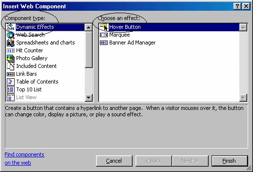
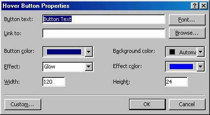
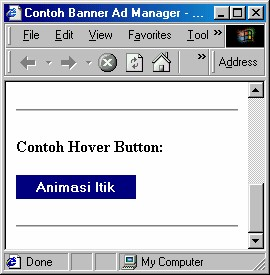

8 Hover Button
Satu lagi animasi yang bisa kita manfaatkan dari FrontPage XP, yaitu animasi pada
tombol yang disebut Hover Button.
Tombol jenis ini memiliki perilaku khusus, yaitu akan mengubah tampilan tombol
sebagai reaksi atas keadaan tertentu. Misalnya warna tombol akan berubah jika
pointer mouse berada tepat di atasnya.
8.1 Membuat Hover Button
Cara pembuatan Hover Button adalah:
1. Tentukan halaman tujuan link. Misalnya halaman Itik.htm.
2. Aktifkan Insert _ Web Component. Muncul kotak dialog Insert Web
Component.

Gambar 8.48 Kotak dialog Insert Web Component
3. Pada bidang kiri, klik Dynamic Effects. Pada bidang kanan, klik ganda Hover
Button. Muncul kotak dialog Hover Button Properties.

Gambar 8.49 Kotak dialog Hover Button Properties
4. Pada kotak isian Button Text isikan judul tombol. Misalnya “Animasi itik”.
5. Pada kotak Link to, tuliskan adress halaman tujuan link, dalam contoh ini
Itik.htm. Anda bisa menggunakan tombol Browse untuk mencarinya.
6. Pada kotak pilihan Button color, tentukan warna tombol.
7. Pada kotak pilihan Background color, tentukan warna latar.
8. Pada kotak pilihan Effec t, tentukan jenis efek, misalnya Glow.
9. Pada kotak pilihan Effect color, tentukan warna efek.
10. Pada kotak isian Width dan Height isikan ukuran lebar dan tinggi tombol.
11. Klik OK.
Anda bisa mencobanya pada browser, hasilnya akan tampak seperti Gmbar 8.50.

Gambar 8.50 Tampilan awal
Sekarang, cobalah gerakkan pointer mouse ke tombol tersebut, maka tampilannya
akan berubah seperti Gambar 8.51.
Gambar 8.51 Tampilan tombol berubah ketika pointer mouse tepat di atasnya
Kalau Anda klik tombol tersebut maka halaman tujuan link akan ditampilkan.
8.2 Mengedit Hover Button
Untuk mengubah ukuran tombol, Anda bisa langsung mengubahnya pada halaman,
yaitu klik tombol lalu drag handle.
Sedangkan untuk pengeditan properti lainnya, Anda harus menggunakan kotak
dialog, dengan cara:
1. Pada halaman, klik kanan tombol.
2. Klik perintah Hover Button Properties, muncul kotak dialog Hover Button
Properties.
Gambar 8.49 Kotak dialog Hover Button Properties
3. Selanjutnya Anda bisa mengubah properti sesuai keperluan.
4. Klik OK.
Copyright © Herlan Lesmana
Created with the Freeware Edition of HelpNDoc: Easy CHM and documentation editor